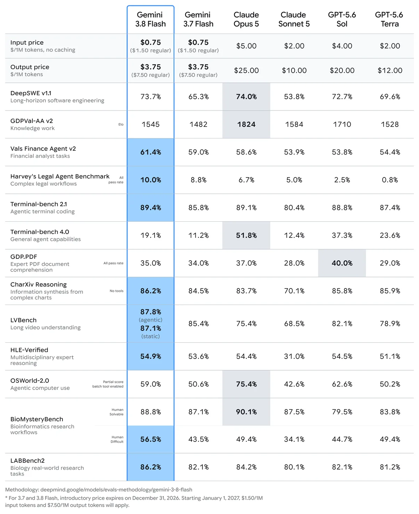

02 Google 게시일 2026.09.02
구글이 Gemini 3.8 Flash와 Cyber를 내놨다

구글이 Gemini 3.8 계열 두 모델을 공개했다. 하나는 범용 업무와 코딩용이다. 다른 하나는 취약점 탐지와 패치에 초점을 맞춘 보안 모델이다. 둘 다 같은 기반 지능을 쓰지만, 배포 대상과 안전 통제는 다르게 잡았다.
핵심 브리핑
Gemini 3.8 Flash는 복잡한 추론과 코딩, 에이전트형 업무를 겨냥한 모델이다. 구글은 3.7 Flash와 같은 속도와 낮은 가격을 유지하면서 성능을 높였다고 밝혔다.
Gemini 3.8 계열은 두 종류로 나왔다. 3.8 Flash는 일반 개발자와 기업용이다. 3.8 Flash Cyber는 취약점 탐지와 자동 패치에 초점을 맞췄고, Fairwind Program을 통해 신뢰된 방어 조직에만 제공한다. 구글은 두 모델이 같은 기술 바탕을 쓴다고 설명했다. 성능 향상에는 장시간 에이전트 루프와 사이버보안 도메인 학습이 기여했다고 밝혔다.
- Gemini 3.8 Flash 가격: 입력 100만 토큰당 0.75달러
- Gemini 3.8 Flash 가격: 출력 100만 토큰당 3.75달러
- 가격 조건: 3.7 Flash와 같은 도입가
- 출시 간격: 6주 동안 세 번째 Flash 출시
- 직전 3.7 Flash 출시 후 3주 만에 공개
구글은 3.8 Flash가 복잡한 작업에서 더 많은 추론 단계와 반복 도구 호출을 수행한다고 설명했다. 그만큼 토큰 사용량이 늘 수 있다. 계산 효율이 더 중요하면 낮은 effort 설정을 쓰거나 3.7 Flash를 계속 쓰라고 안내했다.
3.8 Flash Cyber는 보안 방어에 초점을 뒀다. 구글은 공격 기능보다 취약점 수정 역량을 우선했다고 밝혔다. Fairwind Program 대상은 정부 기관, 핵심 인프라 운영자, 소프트웨어 유지관리자 같은 신뢰된 방어 조직이다.
Cyber 모델 성능 수치도 제시했다. 내부 벤치마크에서는 20개 프로그래밍 언어에 걸친 복잡한 코드베이스에서 취약점 발견 성공률이 70%를 넘었다고 밝혔다. 외부 벤치마크 CWE-Bench는 Collinear가 운영한다. 이 평가에서 pass@1 47.2%를 기록했다. 비교한 선도 프런티어 모델은 47.8%였다. 구글은 비용은 더 낮다고 주장했다.
실사용 사례도 함께 공개했다. Chrome Security 팀은 3.8 Flash Cyber가 훨씬 큰 상용 모델보다 Chrome 취약점에 대한 올바른 패치를 2.6배 더 많이 만들었다고 밝혔다. Wiz는 자사 내부 침투 테스트 벤치마크에서 다른 선도 프런티어 모델보다 리콜이 7.5~9.7%포인트 높았고, 비용은 2.3~5.2배 낮았다고 밝혔다. Google Cloud Vulnerability Research 팀은 수개월 걸리던 중대한 기반 취약점을 2시간 안에 찾았다고 밝혔다.

주요 트렌드
구글은 이번에도 가격을 크게 흔들지 않고 성능을 올리는 방식을 택했다. 더 비싼 상위 모델과 정면 비교하기보다, '같은 속도와 낮은 가격'을 유지한 채 더 긴 추론을 태워 범용 업무 영역을 넓혔다. 이는 기업 시장에서 비용 예측 가능성을 무기로 삼겠다는 신호다.
보안 특화 모델을 일반 API와 분리한 점도 눈에 띈다. 3.8 Flash Cyber는 성능만 높은 모델이 아니다. 접근 대상을 제한한 프로그램 안에서만 공급한다. 프런티어급 보안 기능은 공개 경쟁보다 접근 통제가 상품 구조의 일부가 되고 있다.
구글은 일반형과 보안형이 같은 기반 지능을 공유한다고 설명했다. 이는 장기적으로 범용 모델의 보안 능력도 계속 높아질 수 있음을 뜻한다. 기업은 모델 종류보다 배포 정책, 권한 경계, 사용 로그를 더 세밀하게 봐야 한다.
업계의 움직임
이 발표는 Google DeepMind 블로그에서도 함께 다뤄졌다. 구글은 Chrome Security 팀, Wiz, Google Cloud Vulnerability Research 팀의 사용 사례를 앞세워 실무 반응을 먼저 제시했다. 공개된 발췌문 안에서는 경쟁사의 직접 대응 발언은 확인되지 않았다.
시사점과 체크포인트
일반 업무용 모델과 보안용 모델을 같은 도입 절차로 보면 위험하다. 3.8 Flash는 개발 보조, 분석 보고, 에이전트형 사내 업무에 검토할 수 있다. 3.8 Flash Cyber는 보안팀 전용 도구로 봐야 한다.
우리 회사라면 다음을 먼저 점검할 만하다.
- 개발 조직: 3.8 Flash가 장기 코딩 작업에서 토큰 사용량을 얼마나 늘리는지
- 재무·법무 지원: 전문 도메인 보고서 성능이 실제 내부 양식 준수로 이어지는지
- 보안 조직: Fairwind Program 대상이 되는지, 접근 조건과 책임 범위가 무엇인지
- 운영 조직: 프롬프트 인젝션 방어 향상이 실제 사내 도구 연결 환경에서도 유지되는지
비용 해석도 주의가 필요하다. 구글은 3.7과 같은 도입가를 강조했다. 하지만 높은 effort 설정에서는 토큰 사용량이 늘 수 있다고 밝혔다. 단가만 보고 총비용을 판단하면 어긋날 수 있다. Cyber 모델의 구체 가격은 이 발췌문에 없다.
주요 용어
원문 정보
제목: Gemini 3.8 Flash and 3.8 Flash Cyber
게시일: 2026.09.02